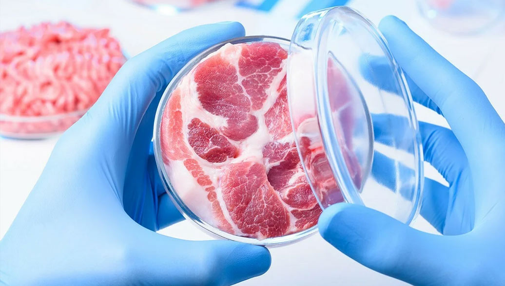

Технологические тренды 2025 года
-
Клеточные продукты питания
Клеточное сельское хозяйство — лишь один из способов передать производство продовольствия в другие руки. Если рассуждать о том, какие технологии будут активно развиваться в 2023 году, нельзя не упомянуть искусственное воссоздание продуктов питания. Человечество уже научилось делать мясо, рыбу, молочные продукты без использования животных.
Стоит заметить, мясо сегодня уже научились выращивать не только из животных клеток, есть ученые, которые создают мясоподобные белки из растений. Характеристики этих продуктов почти полностью воспроизводят традиционные аналоги по своему составу и вкусовым качествам.